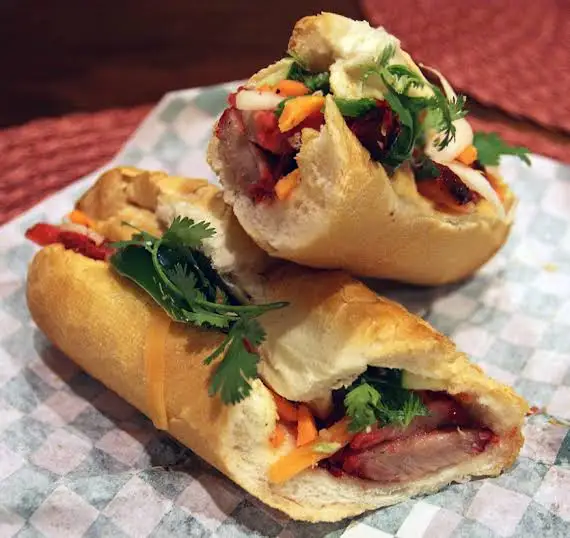
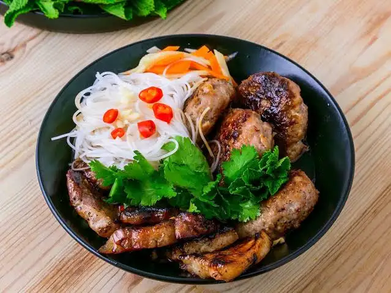

3 món ăn tôi yêu thích nhất
- Phở bò
- Bánh mì thịt nướng
- Bún chả
Hình ảnh minh họa


Tìm hiểu thêm
Bạn có thể tìm hiểu thêm về ẩm thực Việt Nam tại Wikipedia - Ẩm thực Việt Nam .


Bạn có thể tìm hiểu thêm về ẩm thực Việt Nam tại Wikipedia - Ẩm thực Việt Nam .